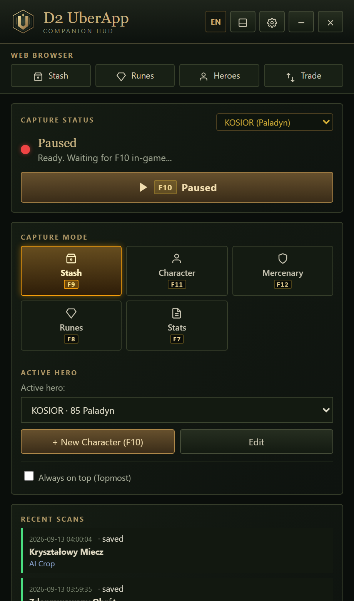
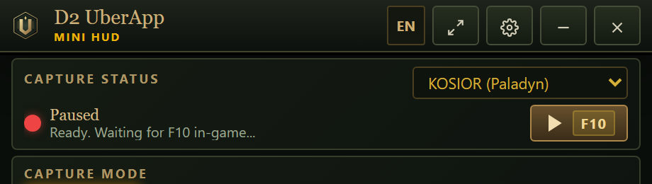
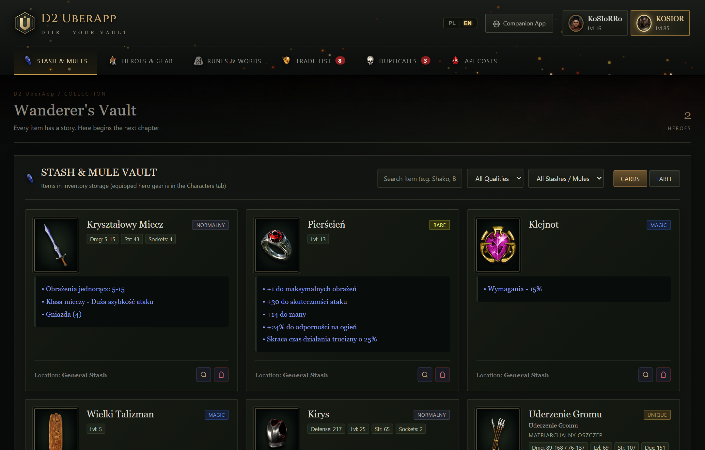
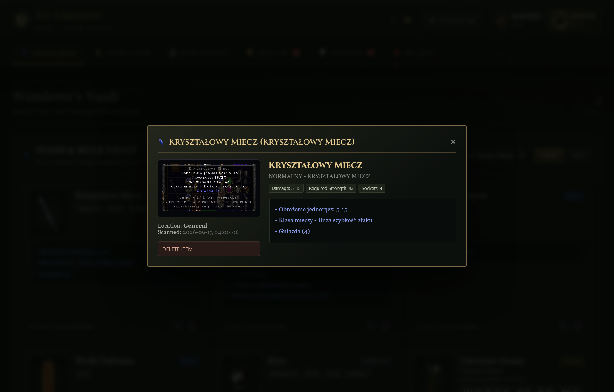
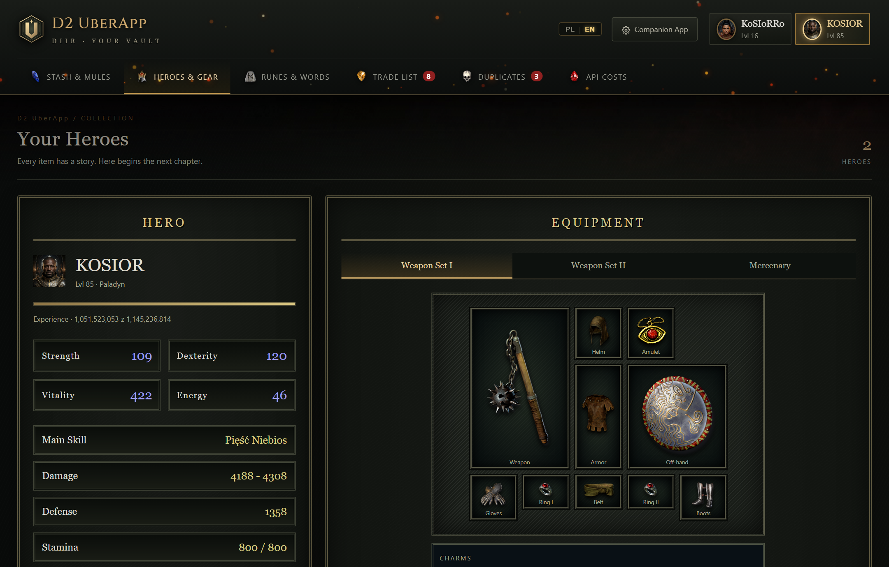
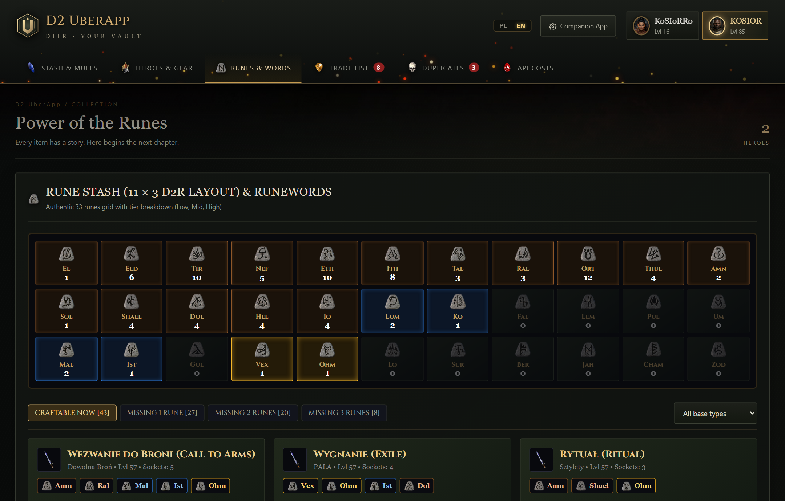
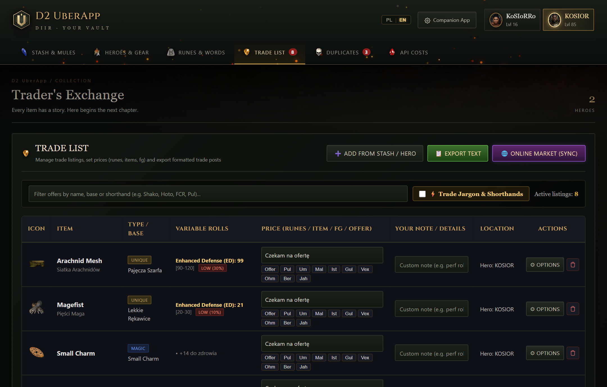

Twoje wsparcie
w D2R
Your Companion
in D2R
Błyskawiczne skanowanie w grze (klawisz F10) zasilane przez model Google Gemini 3.5 Flash Lite. Aplikacja analizuje wyłącznie zrzuty ekranu, co gwarantuje pełne bezpieczeństwo Twojego konta (brak ingerencji w pamięć RAM czy pliki gry). Wymaga darmowego klucza Google Gemini API. Instant in-game scanning (F10 hotkey) powered by Google Gemini 3.5 Flash Lite. Operates strictly by analyzing screenshot pixels, ensuring complete safety for your account (zero memory injection or game file hooks). Requires a free Google Gemini API key.
Pełne bezpieczeństwo Twojego konta w grze. Complete account safety in Diablo II: Resurrected.
Wielu graczy słusznie dba o bezpieczeństwo swoich kont. D2 UberApp powstał od podstaw w architekturze Screenshot-Only, całkowicie odizolowanej od procesu gry i pamięci systemu. Players naturally care about their account safety. D2 UberApp was built from day one on a strict Screenshot-Only architecture, completely decoupled from the game process and system memory.
Działa wyłącznie na zrzutach ekranu Screenshot-Only Operation
Aplikacja pobiera klatkę pulpitu przez standardowe Windows API (identycznie jak programy typu OBS Studio, Discord czy Narzędzie Wycinanie). Nigdy nie podłącza się pod proces gry. Captures desktop frames via standard Windows API calls (identical to OBS Studio, Discord screen share, or the Windows Snipping Tool). Never hooks into the game.
Brak odczytu pamięci RAM Zero Memory Scanning
D2 UberApp nie dotyka pamięci RAM procesu D2R.exe. Nie skanuje struktur pamięci, wskaźników ani tabel obiektów, co gwarantuje pełną izolację.
D2 UberApp never accesses or inspects the RAM of D2R.exe. It does not scan memory offsets, entirely eliminating any anti-cheat conflict.
Zero wstrzykiwania kodu (DLL) Zero Code or DLL Injection
Do procesu gry nie jest wstrzykiwana żadna biblioteka DLL, nie są modyfikowane pliki MPQ/CASC, a launcher gry pozostaje w 100% nienaruszony. No dynamic libraries (DLL) are injected into the game process, no MPQ/CASC archives are modified, and the official game installation remains untouched.
Apka Towarzysząca — Pełny In-Game HUD Companion App — Full In-Game HUD
Twój osobisty ekspert Diablo II zawsze pod ręką. Apka Towarzysząca unosi się nad oknem gry, dzięki czemu skanujesz przedmioty bez konieczności wychodzenia z Sanktuarium. Your personal Diablo II expert always on your screen. The Companion App floats smoothly above your game, letting you scan loot without minimizing Sanctuary.
Błyskawiczna analiza i ocena widełek rolls w locie Instant Affix Analysis & On-The-Fly Roll Ratings
Najedź kursorem na upuszczony przedmiot i wciśnij F10. Apka Towarzysząca w ułamku sekundy pobiera kadr z tooltipem, rozpoznaje statystyki za pomocą modelu Gemini i prezentuje dokładną ocenę widełek statystyk. Hover over any dropped item and press F10. The Companion App captures the tooltip instantly, parses all stats using Gemini, and presents exact percentile roll evaluations.
- Always on Top:Always on Top: Okno aplikacji unosi się nad grą, nie przeszkadzając w sterowaniu postacią.Window floats above the game without capturing mouse inputs or breaking gameplay.
- Jeden klik do schowka:One-click save: Przycisk "Dodaj do schowka" natychmiast zapisuje zidentyfikowany przedmiot do Twojej bazy."Add to Stash" button instantly registers the identified item to your database.
- Kolorystyczne oceny:Color-coded rolls: Odznaki PERFECT (100%), HIGH, MID oraz LOW ułatwiają szybką decyzję czy warto zachować drop.PERFECT (100%), HIGH, MID, and LOW badges make loot retention decisions effortless.

Tryb Mini — Dyskretny pasek podczas walki Mini Mode — Discrete Status Bar In Combat
W ferworze walki z hordami demonów na Terror Zones lub Uber Tristram liczy się każdy centymetr ekranu. Tryb Mini zwija apkę do minimalistycznego widżetu. During intense combat runs on Terror Zones or Uber Tristram, every centimeter of screen visibility matters. Mini Mode collapses the companion into a sleek status pill.

Zero zasłaniania kuli życia, minimapy czy potworów Zero Obstruction of Health Globes, Minimap, or Monsters
Pasek Mini zajmuje zaledwie kilkadziesiąt pikseli w rogu monitora. Wyświetla status połączenia z modelem AI, liczbę pomyślnie zindeksowanych przedmiotów w bieżącej sesji oraz informację o skrócie F10. The Mini bar takes up only a few dozen pixels in the corner of your display. It shows active AI connectivity, item scan count for the session, and ready indicators.
- Kompaktowy rozmiar:Ultra-compact: Dyskretny wygląd, który idealnie wtapia się w interfejs Diablo II: Resurrected.Blends cleanly into the aesthetic of Diablo II: Resurrected without clutter.
- Rozwijanie 1-kliknięciem:1-click expansion: W każdej chwili możesz jednym kliknięciem wrócić do pełnego widoku szczegółowego.Instantly toggle back and forth between mini and full HUD views at any second.
- Pełna funkcjonalność F10:Full F10 capture: Mimo miniaturyzacji klawisz F10 działa nieustannie w tle z potwierdzeniem dźwiękowym.Full background capture functionality and sound alerts remain fully armed.
Wszystkie moduły i ekrany D2 UberApp All Modules & Interfaces of D2 UberApp
Zobacz na własne oczy, jak prezentuje się kompletne środowisko aplikacji — od webowej skrytki i podglądu postaci, przez tablicę run i giełdę, aż po nakładkę HUD w grze. See the complete suite in action — from the web stash and hero armory, through rune wealth grids and trading desk, to in-game companion HUDs.

01. Skarbiec i Wyszukiwarka Przedmiotów01. Web Vault & Item Search
Przeglądaj wszystkie swoje przedmioty, filtruj po jakości (Unikalne, Zestawy, Runy, Rzadkie), slotach oraz nazwach. Browse your complete inventory collection, filter by rarity tiers, item slots, and exact roll keywords.

02. Karta Przedmiotu i Ocena Widełek02. Item Card & Exact Roll Rating
Szczegółowy widok ze statystykami bazowymi, min/max rollami afiksów oraz procentową oceną rynkową. Detailed inspector displaying min/max affix boundaries alongside variable statistical percentile ratings.

03. Podgląd Postaci i Aktywnego Sprzętu03. Hero Armory & Equipment Slots
Klasyczny układ slotów ekwipunku, zestaw broni na zamianie (Weapon Swap) oraz osobny ekwipunek najemnika. Authentic equipment paperdoll slots, secondary weapon swap sets, and dedicated mercenary armory tracking.

04. Tablica 33 Run & Słowa Runiczne04. 11x3 Rune Grid & Runeword Calculator
Siatka 11x3 dla wszystkich 33 run (El do Zod) oraz inteligentny kalkulator wskazujący gotowe do złożenia słowa runiczne. 11x3 grid for all 33 runes with live counts and an intelligent calculator correlating runes with socketed bases.

05. Giełda Wymian i Eksport Ofert05. Trader's Exchange & Market Export
Generator żargonu handlowego oraz synchronizacja 1-kliknięciem z naszą giełdą online pod adresem d2uberappmarket.tw5.org. Trade shorthand jargon generator and 1-click sync to our public online market at d2uberappmarket.tw5.org.
06. Apka Towarzysząca (Pełny HUD)06. Companion App (Full HUD)
Nakładka zawsze na wierzchu z bezpośrednim podglądem ostatnio zidentyfikowanego dropu i przyciskiem do schowka. Always-on-top in-game overlay featuring last identified loot cards and direct save actions.
07. Apka Towarzysząca (Tryb Mini)07. Companion App (Mini Mode)
Kompaktowy pasek statusu w rogu ekranu, zapewniający pełną widoczność pola walki podczas intensywnego farmienia. Compact corner status bar ensuring unobstructed field of view during high-intensity farming runs.
Autentyczny podgląd przedmiotów i widełek rolli. Authentic item inspector with exact roll percentiles.
W Diablo II: Resurrected różnica między minimalnym a maksymalnym rollem decyduje o gigantycznej wartości rynkowej. D2 UberApp natychmiast wylicza dokładny percentyl każdego zmiennego afiksu. In Diablo II: Resurrected, variable roll boundaries determine enormous trade value swings. D2 UberApp instantly calculates exact percentile ratings for every variable affix.
•+30% do szybkości poruszania się+30% Faster Run/Walk
•+15% do szansy na druzgocące uderzenie+15% Chance of Crushing Blow
•+15% do szansy na zabójcze uderzenie+15% Deadly Strike
•+10% do szansy na otwarcie rany+10% Chance of Open Wounds
•+195% do obrony+195% Enhanced Defense
•+20 do maksymalnej wartości wytrzymałości+20 to Maximum Stamina
•Wymagania -25%Requirements -25%
•+1 do wszystkich umiejętności+1 to All Skills
•+25% do szybkości rzucania czarów (FCR)+25% Faster Cast Rate
•-20% do odporności przeciwnika na błyskawice-20% to Enemy Lightning Resistance
•+15% do obrażeń od umiejętności błyskawic+15% to Lightning Skill Damage
•+200 do obrony (MAX)+200 Defense (MAX)
•+1 do wszystkich umiejętności+1 to All Skills
•+40% do szybkości ataku (IAS)+40% Increased Attack Speed
•+260% do zwiększonych obrażeń+260% Enhanced Damage
•+1 do Dowodzenia Bitewnego (BC)+1 to Battle Command
•+2 do Rozkazów Bojowych (BO)+2 to Battle Orders
•+1 do Okrzyku Bojowego+1 to Battle Cry
•30% lepsza szansa na znalezienie magii (MF)30% Better Chance of Getting Magic Items
Co przed nami? Aktywny rozwój aplikacji. What's Next? Active Feature Roadmap.
D2 UberApp jest w fazie intensywnych testów beta. Poniżej znajduje się oficjalna lista funkcjonalności w trakcie implementacji: D2 UberApp is in active beta testing. Below is our prioritized engineering roadmap:
Reszta itemów (Klucze na Ubery, Organy, Essencje)Remaining Items (Uber Keys, Organs, Essences)
Pełne wsparcie dla kluczy (Key of Terror, Hate, Destruction), organów Uber Tristram, tokenów i eliksirów.Complete recognition for Pandemonium Keys, Uber Organs, Respec Tokens, and quest items.
Przeliczanie i analiza bonusów do skilliSkill Bonus Aggregation & Calculations
Automatyczne sumowanie bonusów do poszczególnych drzewek umiejętności postaci z całego ekwipunku.Aggregated total skill point bonuses calculated across entire equipped hero gear and charms.
Inne modele AI & Opcja modeli lokalnychAlternative AI Models & Local Offline Inference
Wsparcie dla lokalnych modeli wizyjnych (np. Ollama / LLaVA), umożliwiających skanowanie 100% offline bez internetu.Support for local vision models (e.g. Ollama / LLaVA) allowing fully offline recognition with zero API reliance.
Więcej wersji językowychExpanded Internationalization
Dodanie obsługi języka niemieckiego, francuskiego, hiszpańskiego oraz koreańskiego.Upcoming localization for German, French, Spanish, and Korean player communities.
Poprawki błędów, optymalizacje i ulepszeniaBug Fixes, Latency Optimizations & Polish
Ciągłe skracanie czasu odpowiedzi OCR, ulepszenia bazy danych i bezpośrednia integracja z rynkiem online.Sub-second scan response optimizations, enhanced SQLite indexing, and seamless online marketplace sync.
Wygodne sterowanie z poziomu gry. In-Game Hotkeys & Direct Actions.
Wszystkie skróty działają w tle w systemie Windows i nie kolidują z domyślnymi klawiszami Diablo II: Resurrected. All keybinds operate globally in background without conflicting with default Diablo II: Resurrected bindings.
Główny Skan Przedmiotu Instant Tooltip Capture
Wskaż kursorem przedmiot w skrytce lub inwentarzu i naciśnij F10. Dźwięk potwierdza pomyślny skan. Hover your cursor over any item tooltip in game and press F10. Audio feedback confirms capture.
Tryb Zrzutu Całego Ekranu Full Window Fallback
Awaryjny tryb przechwytywania pełnego okna gry, przydatny przy niestandardowych rozdzielczościach ultrawide. Captures the entire active client window, ideal for ultrawide configurations.
Automatyczny Autostart Seamless Web Companion
Skarbiec webowy otwiera się automatycznie w Twojej domyślnej przeglądarce pod adresem http://127.0.0.1:5005.
Your web vault opens automatically in your default browser at http://127.0.0.1:5005.
Uruchom jednym kliknięciem — bez instalowania Pythona. Run with 1-click — No Python installation required.
Przygotowaliśmy gotowe wydania dla każdego gracza. Nie musisz znać się na programowaniu ani instalować środowiska Python — pobierasz, klikasz i grasz! Packaged standalone releases tailored for players. No Python setup or command line needed — download, launch with 1-click, and jump straight into Sanctuary!
Gotowa Paczka Windows (.zip)Portable Windows Bundle (.zip)
Kompletny pakiet zawierający wbudowany runtime, gotowe pliki bazy i katalogów. Wystarczy rozpakować i uruchomić plik Uruchom_D2_UberApp.bat. Complete standalone package containing embedded runtime and databases. Simply extract and double-click Uruchom_D2_UberApp.bat.
- ✓ Nie wymaga instalowania Pythona w systemieZero system-wide Python installation needed
- ✓ Działa od razu na Windows 10 i 11Runs out of the box on Windows 10 & 11
- ✓ Możesz trzymać na pendrive lub dowolnym dysku100% portable — run from any folder
Instalator Setup (.exe)Windows Setup (.exe)
Tradycyjny instalator Windows przygotowany w Inno Setup. Samodzielnie umieszcza skrót na Pulpicie i w Menu Start, konfiguruje środowisko i uruchamia aplikację. Classic Windows wizard setup installer. Automatically creates Desktop and Start Menu shortcuts, manages files, and starts with 1-click.
- ✓ Wygodny kreator instalacji "Dalej, Dalej, Gotowe"Classic easy setup wizard
- ✓ Ikona D2 UberApp bezpośrednio na Twoim PulpicieDesktop & Start Menu launch shortcuts
- ✓ Wbudowany deinstalatorClean built-in uninstaller
Kod Źródłowy (Git / Python)Source Code (Git / Python)
Dla graczy z zainstalowanym Pythonem 3.10+. Pobierz kod źródłowy, zainstaluj biblioteki i rozwijaj aplikację razem z nami. For developers and enthusiasts with Python 3.10+. Clone the repository, inspect code, and contribute features.
pip install -r requirements.txt
python app.py